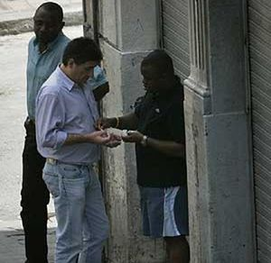
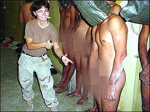
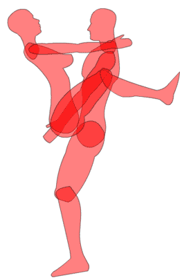

PPAP
 De: La Frikipedia, la enciclopedia extremadamente seria.
De: La Frikipedia, la enciclopedia extremadamente seria.
PPAP Definicion
Idiotizacion o idealizacion de lo que debería de ser un ingeniero.
Proceso de la industria Automotriz, cuyas sigas significan "Pendejeadas Para Acumular Papeles" o" Proceso Para Atormentar Pendejos" El cual se fundamenta en una necesidad inventada de pedir pruebas y documentos sin sentido importantes para verificar que un material puede ser usado en producción, sin importar si este material ya este en producción o no, o si es que se va a usar o no. A pesar de que cada empresa ha desarrollado sus propias pendejeadas ideas hay un proceso del cual se basan todos y como epidemia de enfermedad infecciosa, generadora de lecciones con pus, ha sido transmitida a toda la industria en general y ahora todos ellos sufren se regocijan por esta estupidez grandiosa idea.
Elementos críticos
Propiedad del proceso.
Para poder inventar alguna pendejeada que requiere que se generen muchos papeles y que mucha gente trabaje innecesariamente y sobretodo tiene que costar mucho dinero, para que vean que esto es algo de profesionales tiene que ser caro como lo mas caro de todas tus posesiones multiplicado por 20. Tienes que decir que tu eres el propietario del proceso y que sabes lo que estas haciendo.
Definición del proceso.
Tienes que hacer muchas juntas y perder suficiente tiempo para decir que ya tienes el proceso definido. No puedes decir que el proceso esta definido si no han tenido suficientes juntas, y perdido mas de 10,000 horas hombre esto hará parecer que no cualquiera puede hacerlo.
Documentación del proceso.
Es la parte critica, para poder reclamar gastos de almacenaje de documentos, tienes que asegurarte de que el proceso requiera por lo menos de 50 hojas por cada uno de los pasos, y tener por lo menos 50 o mas pasos. Después esas mismas 50 hojas se revisan para así poder generar mas documentos.
Nexos con los proceso existentes.
Para que la gente no se de cuenta de que son puras burradas, para sacar dinero y justificar tu trabajo, debes procurar que se mencionen uno o dos procesos ya conocidos y que si funcionan para que la gente crea que este es mas eficiente y mejor.
Monitoreo del proceso.
Debes decir que para asegurar que no va a haber bronca, y que todo va a estar bien todo el tiempo, que de ves en cuando vas a echarle un ojo a la sopa. Esto para estar bien seguro que nadie ha encontrado una mejor manera de hacer las cosas y si lo hacen, reprimirlos inmediatamente no vaya a ser que gerencia se de cuente de tu incompetencia.
 Monitoreando (espiando) una transacción.
Mantenimiento de registro.
Es muy importante, ya que esto va a ser en realidad lo que va a generar las montañas de papeles. Hay que asegurar que constantemente vamos a estar recibiendo documentos para el archivo muerto, que después pueden extraviarse y volvemos a iniciar todo el proceso de nuevo y generar mas papeles. Por su puesto que no importa que ya tengamos la informaron. Siempre que haya la oportunidad de hacer mas papeles hay que tomarla.
Elementos del PPAP
- 1 Archivo de Diseños. Es un lugar en donde las fantasías de canabis de los ingeniebrios plasmadas ya sea en papel o electrónicamente se guardan, no importa que no exista ningún proceso en la tierra para poder fabricar estos alucines, de todas maneras tiene que haber un lugar para guardarlos
- 2 Autorización del cambio de ingeniería. Si importar lo fumada que este la idea original, siempre puede venir alguien mas a defecarle encima o como dicen los ingenieros a "rediseñarla". Y alguien tiene que poner su firma en caso de que se tenga que meter a alguien a la cárcel cuando esto falle. Normalmente pasa cuando la persona que firma no tiene idea de leyes de la fisica o simplemente estaba distraído.
- 3 Autorización de ingeniera (proceso). Este es el punto en que el que tiene que fabricar la pieza tiene que hacer milagros para hacerla funcionar y después sin importar que hubo un total rediseño en campo de varios de los componentes y procesos, tiene que firmar y confirmar que el diseño esta bien.
 Autorización de ingeniera de proceso
- 4 DFMEA Design Failure Mode and Effect Analysis. Como ya sabemos que el diseño es pura basura y que va a fallar, tenemos que poner en letras pequeñas que esto va a pasar y en que circunstancias para evitar problemas legales.
- 5 Diagrama de flujo del Proceso. En realidad estas son puras especulaciones del ingeniero de diseño. En ingeniería de diseño nadie sabe en realidad que herramientas existen y cuales son sus capacidades. Aquí puedes decir cualquier cosa, nadie lo va a leer en realidad. Esta parte la leen los ingenieros de proceso cuando quieren divertirse un rato.
Diagrama de flujo del Proceso
- 6 PFMEA Process Failure Mode and Effect Analyis. Si el diagrama de flujo era una historia de fantasía este es como demostrar que el monstruo del lago ness tiene 6 dedos en las patas y describir sus detalles. Básicamente tienes que predecir cuando alguien la va a defecar y buscar evitar estos errores. Es como decir que se va a diseñar algo a prueba de idiotas, pero los idiotas son muy ingeniosos y siempre encuentran nuevas formas de generar errores. Lo cual significa que el PFMEA es un alucine de grandes proporciones.
- 7 Plan de control. Firmado por proveedor y cliente. Es cuando comprometes al proveedor a vender su alma al diablo para que cuando tu le digas que algo esta mal solo agache la cabeza y te diga que si.
Proveedor pensando si firmar o no
- 8 MSA (Measurement System Analysis Studies) o en Español ( Me Salio Asi) Es el registro en papel de como salio de la producción alguna pieza.
- 9 Registro de la prueba de desempeño de los materiales. Es lo mas divertido de todo. Básicamente te dedicas a destruir las cosas y te pagan por ello.

Revisión de la resistencia de vidrio para la PDDM
- 10 Resultados dimensionales. Esto tiene que ver de cuando los entes de otras dimensiones traspasan a esta dimensión y tienes algunos resultados, estos pueden ser buenos o malos, cuando son malos, los regresas hasta que sean buenos. También es la excusa que usan los ingenieros para hacerse los importantes cuando dice que las dimensiones están mal y que no se puede usar la pieza sin importar que tiene ya mas de 10 años así, funcionando y en el mercado.
- 11 Pruebas de proceso inicial "most critical characteristics". Esto en realidad como dijimos antes no importa. Si la pieza funciona o no, no es relevante, tiene que estar igual que el dibujo.
 Pruebas de proceso inicial, no importa. Siempre tiene que ser como dice el dibujo.
- 12 Documentos de calificación del laboratorio. depende de que tan buenas estén las pastillas que fabriquen y que tan largo sea el viaje que provoca, a cada laboratorio se le da una calificación.
- 13 Reporte de Aprobación de Apariencia. Eso es cuando ves a alguien pasar si vale la pena chiflarle o no. Si le chiflas significa que la apariencia esta bien, si no, pues no.
- 14 Muestras para producción. Es cuando ya de plano quieres sacarle algo gratis a alguien.
- 15 Muestra maestra. "Show it to me teacher". Tubo tubo, dance dance,tubo tubo, dance dance,tubo tubo, dance dance,tubo tubo, dance dance,tubo tubo, dance dance,tubo tubo, dance dance.
- 16 Ayudas para la revisión de las piezas, si has visto un paquete de preservativos que te dice como va y en donde se pone, esto es lo mimo pero aplicado a la fabricación.

Ayudas para la revisión de las piezas
- 17 Requerimientos específicos del cliente. Aquí es donde decides de que tanto estés dispuesto a hacer por dinero.
Requerimientos específicos del cliente
- 18 PSW (Part Submission Warrant) o (Pieza Salio Wena) Es el conjunto de papeles que se mandan al final de todo este circo y que dicen que ya puedes fabricar con esta pieza, lastima que ya haya sido sustituida por un modelo mas reciente y comenzamos de nuevo.
Referencias
Todo esto lo vi en un viaje astral provocado por 25 cervezas y algo adicional.
Frikipedia 2005-2016, Licencia
GFDL 1.2 - Extraído por FrikiLeaks